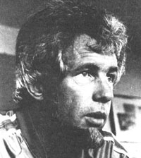

Dan Poynter likes to say that he "fell into publishing. " Back in 1962 he was busily studying for law-school finals when a buddy suggested that they ease the tension by making a parachute jump. That was Dan's first experience with parachuting, but he went on to become expert at the sport, making some 1,200 jumps and developing into a master 'chute rigger and designer. More important (for our purposes, at least), Dan's love for the sport inspired him to spend eight years doing research for a technical manual on the parachute. And when the massive (592-page) book was completed, Poynter decided to publish and market it himself: So was born The Parachute Manual-known as "the bible" to 'chute riggers everywhere-and so also was born Para Publishing and a system of writing and self-publication that was to make Dan probably the largest one-person publishing company in the world.
As he became more and more successful, Poynter decided to share the secrets that had let him succeed, over and over again, where so many others had failed. The results of that decision-The Self-Publishing Manual and Pub lishing Short-Run Books-have helped numerous men and women get themselves into print profitably . . . and, while doing so, have helped Para Publishing continue to prosper. In the following interview-excerpted from a lengthy discussion between Dan and MOTHER staffer Bruce Woods at Poynter's beautiful Santa Barbara, California, home/office-the boss and sole employee of Para Publishing "drops" some hints on how to free the would-be author that's in most all of us . . . and on how to make money while doing so!
PLOWBOY: Dan, it's been said that you just might be the most successful self-published author in America today. Can you give us some specific information concerning just how well your business has done?
POYNTER: Sure, here are the numbers: One of my books is in its tenth revised edition with over 130,000 copies in print, and I have several others that sell at a steady rate of 10,000 to 12,000 annually, year after year. The publications that sell a lower volume-say, around 1,000 per year-carry a relatively higher price to make up for their more limited sale. So far, in total, I've moved over a quarter of a million books for almost $2 million. My business is now grossing in the low six figures each year, and in 1983 I shipped more than 50,000 books.
PLOWBOY: That's quite an impressive track record. Is there anything in your prepublishing background that you feel might have contributed to your success?
POYNTER: Well, I think I was most fortunate in coming from the worlds of marketing and mail order instead of from the literary or academic world. I don't pretend to be a writer . . . hell, I only took the two required English courses in college! However, the material that I write and publish consists of information-real, solid, usable facts and figures-that people want and need. It's packaged nicely (if you want to sell a book, it has to look like a book), and I market my products enthusiastically.
PLOWBOY: Are you saying that marketing ability is more important to the self-publisher than writing ability?
POYNTER: Definitely. In fact, I believe that if the big publishing companies would put their editorial departments under their marketing departments, they'd be better able to develop material aimed at specific markets and would sell a lot more books. Of course, that doesn't happen, mostly because such firms tend to be run by the editorial people . . . many of whom feel that if they even talk to the marketing staff, they'll somehow become corrupted.
And that same attitude is even more dangerous to the self publisher, who has to wear both hats and is usually a whole lot more interested in writing the book than he or she is in doing the work necessary to sell it. That's why I tell people who want to get started in this business to write an ad for the book before they begin the book itself. To compose an advertisement, you have to figure out who the book will be written for. And that thought process will help you channel your creative energies in the most effective-and potentially profitable-direction. The correct order in the process is to write the ad, then pick a title, and only then go on to write the book.
PLOWBOY: I think most people, at one time or another, think they might have "a book in them." Would you walk us through the "Poynter Method of Self-Publishing" and, in doing so, pass on some tips to any would-be authors reading this?
POYNTER: Certainly. I don't have any deep, dark secrets . . . after all, my business is spreading information! First off, what will the book be about?
PLOWBOY: Well, let's make it a challenge to your marketing ability . . . let's say we're thinking about writing a book on raising sheep.
POYNTER: Fine; you'll want to look at it from a marketing standpoint before you do anything else. You have to define your audience and, as you do that, keep in mind that there are lots of places to sell books other than bookstores!
After all, most bookstores want a 40% discount, take forever to pay, and will likely purchase only a few copies at a time. Therefore, your first aim is to sell into the activity area that you're writing about. For instance, I market parachuting books to parachute schools and parachute catalog houses. They buy 100, 300, even 500 copies at a time; they pay in 30 days; and they don't return the copies that haven't sold in a month or two, as a bookstore most certainly will.
What I'm getting at is that marketing is a creative process, too! A local woman wrote a book about the city of Santa Barbara a few years back. It was her first effort, and while putting it together, she read my Self-Publishing Manual for tips on marketing it. Well, she ended up making a deal with a local bank. The firm bought her entire first printing of 5,250 copies and gave them as premiums to new customers!
PLOWBOY: What sort of marketing "tricks" would work for our sheep book?
POYNTER: You've got to narrow your focus a bit before you can figure that out. First, you'll gather all the information possible. You'll go to the library and use Bowker's Books in Print to find out what's already available on the subject. Then you'll find those books on the library shelves-or buy them-and look them over to see if the topic has been adequately covered. If there's no need for the book you have in mind, you should change your focus-find one that does answer a demand. Then look into any magazines that deal with your subject area.
Of course, I'm assuming that our hypothetical author is an expert on sheep husbandry. But that's not absolutely necessary in order to do an adequate job on the book! Say he or she isn't an authority but, instead, is just very, very interested in sheep and has kept about half a dozen of them on a small place. That would be almost ideal because most of the books already in print on the subject were likely written by experts, and would focus on large flocks. But if our novice gathers information faithfully and spends a couple of years raising the sheep (and taking notes all the time), that writer will be able to better relate to his or her specific readers-who, we'll assume, will be beginning sheep-raisers with small "backyard" flocks-and will therefore put out a better book than many of those written by the experts.
PLOWBOY: For one thing, that writer would be a lot closer to the typical mistakes that a beginner makes and could help the reader avoid them. An expert might well be too far removed from the pitfalls facing a novice shepherd to be able to point them out.
POYNTER: That's right. Now, to get on with the writing process, you're in the information-gathering stage. This is detective work, and it can be extremely interesting. Even the smallest town library will provide a good starting point, and one lead will tend to produce another. And while this process is under way, you'll begin to think about the various chapters of the book, and you'll start to arrange (and rearrange) the information into different piles. You'll probably start out with magazines and photocopied pages from library books. Then, as the detective work proceeds, you'll begin writing to people for additional information, and the stacks will get bigger and bigger.
Finally, when you think you've exhausted every worthwhile lead, it's time to start writing. I was talking to a guy not long ago who asked me, "Don't you find the first chapter hard to write?" And I said, "Do you start with the first chapter? Never do that. Just look at those eight or ten piles of information on the floor and start with one that interests you . . . or start with the smallest one."
PLOWBOY: That makes sense; after all, how can you write an introduction until you know what you're going to be introducing.
POYNTER: I'm glad you said that, because I never write introductions! I write first chapters. If the book is as necessary as it should be, people will be hungry for information, and a writer ought to start giving it to them immediately.
PLOWBOY: Do you have any tips for people who might find themselves stymied by the prospect of turning all those stacks of information into a rough draft?
POYNTER: Sure, all you need is a big floor. You just sit there with one of your chapter stacks and some scissors and tape and cut up the pieces and move them around. Then, when all the information is in some kind of order, you stand back and look at it and maybe read it over and reshuffle it a couple of times.
Once you're satisfied with the arrangement, simply take the pieces of paper to your desk, a few at a time, and write down the information that they contain in whatever words come to your mind. Don't worry about style at this point, because you'll be going back and rewriting everything once or twice anyway. The hardest part of writing any book is just getting it down on paper the first time . . . so don't worry about it, just do it! In fact, don't even concern yourself if the copy isn't all in com plete sentences! That first draft is the biggest stumbling block you'll face-especially on your first book. After you've got it down, in any form, you'll find the rewriting pretty easy. It's always easier to edit than it is to create.
PLOWBOY: Is there a danger of unintentionally plagiarizing from someone while incorporating all of those little pieces of information?
POYNTER: There could be, but not if you use common sense and have enough pride to want everything to be in your own words anyway. I usually tell people that they should never copy any three words in a row. Just read the information and think about it; you'll probably feel you can say it better. Keep in mind, though, that you'll want to avoid picking up a unique phrase of someone else's . . . even if it's only two words.
PLOWBOY: What's the next step, Dan?
POYNTER: Well, this wouldn't be too soon at all to begin thinking about the cover design. From a marketing standpoint, the cover is the most important part of the book. It'll often be sitting on the shelves among thousands of others, and the cover has to jump out at potential buyers.
You'll notice that the glider on the cover of my hang gliding book is red. I think it was the people at Hot Rod magazine that did a survey a while back and found out that whenever they had a red car on their cover, they'd sell several thousand more copies than they would when they portrayed a similar auto of a different color. I don't know that the rule will always hold true, but it seems a good piece of information to make use of.
I usually start thinking about a cover very early in the book-writing process, and I'm likely to change my plan several times as I go along. Keep in mind, too, that the copy on your front and back covers is probably more important than the photos or illustrations.
For one thing, I think it's best to always use a title and subtitle. Then, when you get your book listed in Books in Print or other directories, you can get away with providing a lot more information about your volume than books with titles alone will offer. When I finished the first edition of that hang gliding book, the sport was so new that no one really knew what it would end up being called. Some enthusiasts called it hang gliding, but others preferred the name sky surfihg. So I titled my book Hang Gliding: The Basic Book of Sky Surfing . . . you see, the subtitle would have kept the book from becoming prematurely obsolete regardless of which name for the sport won out. Another example of how to use a title and subtitle can be seen in my book The Self-Publishing Manual: How to Write, Print, and Sell Your Own Book. As you can see, that pretty much tells the manual's whole story. Of course, it could have said something like "how to create, publish, and market," but the simple, straight-forward, one-syllable words are going to ring true to more people.
And while the front cover tells what the book's about in as clear a manner as possible, the back cover provides important details . . . including your sales message telling why your book is the best thing going on its particular subject. The back cover is also a good place for testimonials, if you happen to get some when you send the manuscript for expert review . . . a point I'll be discussing later. It can also be worthwhile to use it to tell the potential reader why you are especially well qualified to write the book. Don't, however, waste space running your photo and autobiography unless you're so easily recognized that your fare will help sell the book. That sort of information can be placed on an inside page somewhere; the rule for cover copy is, if it doesn't help sell the book, leave it off.
PLOWBOY: While the cover's been gestating, I guess we can assume that the first draft has been completed.
POYNTER: Yes, and now you'll want to go through it from beginning to end and do a semifinal draft, cleaning it up and trying to make the information as clear as possible. But first, be sure to collect all of your chapter piles and store them in marked folders in a box, so you'll always be able to tell where a certain piece of information came from.
Once the semifinal draft is done, you'll have a manuscript that looks like a manuscript . . . all typed and double-spaced. At that point you should begin thinking about the photos and/or illustrations that you'll need. I usually read through a draft and make notes in the margins wherever I feel a specific photo or drawing might be necessary; then I make up a list, get my camera gear, and lake the shots. I've actually taken all of the photos for a book in a single day! Once they're developed, I have them printed on proof sheets (contact prints that are the same size as the negatives), then photocopy the proof sheets, cut out the individual copied photographs, and tape them on the manuscript near the points that they illustrate.
Once that's done, I'll feel comfortable enough with the draft to send appropriate sections to individuals who are considered expert in specific aspects of the subject that I'm dealing with. Many such people will be happy to have the opportunity to go over your work. Some will want to be paid, but most will be satisfied with a small honorarium-maybe $20 or so-and a mention in the book. (Of course, when you give them credit by acknowledging their special editorial help, you'll also lend more credibility to your book!)
It's funny, but a lot of writers (many of them established pros) don't want to let anybody look at their material before publication. I can't understand that point of view. After all, if the book is successful, a whole lot of people are going to be looking at it . . . and then it'll be too late to fix the kind of mistakes that an expert might have caught.
PLOWBOY: Up to this point, we've been talking primarily about the creation of the book. Once the notes from any people who reviewed the manuscript have been added and the final draft prepared, we take a giant step across role boundaries . . . it's time for the writer to become a publisher.
POYNTER: Yes, and that transition really throws some people. It doesn't have to be frightening, though; you just need to take it a step at a time.
First of all, I recommend dealing with a local printer on your first book. That way, you'll know-and have easy access to-the people involved, and you'll learn far more than you would if you sent the book out of state.
PLOWBOY: And then the author is going to have to get involved with choosing paper, type styles, and bindings.
POYNTER: Yes, and my rule of thumb is to stick with the choices that the printer has on hand. Before you settle on a printer, though, you'll want to get price estimates from a number of them. And while you're talking to prospective printers, be sure to ask to see any books they've done.
PLOWBOY: Is there any formula that a first-timer can use to estimate the cost of producing his or her book?
POYNTER: One good way is to write to Delta Litho for its Publisher's Planning Kit (14731 Califa, Van Nuys, CA 91411). If you mention THE Mother Earth News when writing, the people at Delta will know you're a would-be publisher and will send this book-which usually costs $6.95-to you for $3.50 postpaid. It's a complete guide to print planning and contains paper samples, ink samples, pasteup sheets, and cost comparison charts.
At any rate, be careful and cautious when choosing a printer. Your state may have inventory taxes, for instance, that could make it worth-while to print and store the books out of state . . . although the cost of shipping the books from the printer to the storage area and from storage to you would have to be weighed against any such advantages.
Later, when you've settled on one printer and you're choosing from among the type styles, paper, and binding methods he or she has on hand, remember that you should make your book look like a book. Use a standard page size-6" X 9" or 5-1/2" X 8-1/2"-so the book will fit on a bookshelf and appeal to the average book buyer.
PLOWBOY: Once those decisions are made, what other adventures await the novice publisher?
POYNTER: That would be a good time to take care of a few things necessary to legally establish yourself as a publisher. You'll want to take care of copyrights, get your international standard book number and your Library of Congress number, and a whale slew of other details that are spelled out in The Self-Publishing Manual. These steps aren't terribly complicated, though. As we noted before, the real challenge facing most would-be publishers is marketing the book. And a lot of writers just aren't salesoriented . . . in fact, many seem to disapprove of the commercial nature of marketing. Of course, if you want to have the luxury of con tinuing to write, you're going to have to be able to sell your product. And the next step in that direction, which should be taken care of no later than the day you deliver your book to the printer, is preparing a simple news release to try to get some prepublicity for the book.
PLOWBOY: Where would you send the releases?
POYNTER: Well, your hypothetical book is on sheep raising, so you'd send a copy to all of the magazines dealing with livestock in general or sheep in particular. You'd also want to get copies to any local newspapers and regional magazines. You're a local author, so you're local news, and close-to-home publications are just about obligated to use your press release. They'll probably even review your book. Most daily papers have a book review department, but if your hometown journal is a weekly, just send the press release directly to the editor. You could even wind up on the front page-hot news-and that would get people thinking about you and associating your name with the sheep book . . . and that association would begin to establish you as an expert on the subject.
PLOWBOY: What other marketing steps can be taken
POYNTER: You might consider putting together some articles to sell to the same magazines that received your press release. When I finished my parachute manual, I took two of its chapters and broke them down into 16 articles. I simply wrote an introduction and conclusion for each one. By doing that I accomplished several things at once: I [1] got double service out of the work I'd put into writing those chapters for the book, [2] increased my standing as an expert on parachuting by virtue of having published articles in enthusiast magazines, [3] gained invaluable free promotion for my book, since each article noted that it was partially extracted from that volume, [4] earned extra money when I was paid for those articles, and [5] was able to issue a new series of press releases using the listed published articles to increase the credibility of my book!
PLOWBOY: That's definitely getting the most for your effort! I suppose that we can assume that we've gone over the printer's galleys by now and are waiting for the finished books to come rolling of the presses. Is the self publisher's job about done at this point?
POYNTER: Absolutely not! In fact, the job is never really done. You have to constantly be on the lookout for innovative ways to sell your product. If you're writing a book for beginning sheep-raisers, you might be contacting feed companies, who could be interested in using the book in their promotion . . . you'll be offering it to all of the livestock magazines that have their own "bookshelf" page, or trying to imagine a worthwhile arrangement that could be proposed to 4H Clubs, the Future Farmers of America, or associations of sheep farmers or breeders. In short, the selfpublisher's eyes must always be open to new opportunities to get his or her books into the hands of the readers that need them!
PLOWBOY: You've certainly taken joy in meeting that challenge, and your business is thriving. Would you say that self-publishing is an option that should be explored by anyone who's thinking of writing a book?
POYNTER: The answer is a definite yes! It's said that there are 300,000 book manuscripts written every year that don't get into print. The chances of an author without a track record selling to a large commercial press probably rank somewhere between slim and none. Furthermore, big companies move slowly, and once you've defined a market in need of a book, you don't want to wait too long to get your book into that niche, because if you delay, someone else might beat you to it. For these reasons-and because the self-publisher really has control of his or her destiny to a much larger degree than does a writer merely submitting a manuscript-self-publishing has become the hottest growth segment of the entire publishing industry . . . and I don't think we've seen more than the tip of that particular iceberg yet!
EDITOR'S NOTE: The Self-Publishing Manual and Publishing ShortRun Books are available for $14.95 and $5.95 respectively, plus $1.50 shipping and handling, from Mother's Bookshelf P.O. Box 70, Hendersonville NC 28793. For a free self-publisher's information kit from Dan, just write Para Publishing (mention THE Mother Earth News), P.O. Box 4232-P, Santa Barbara, CA 93103-0232.
|
 Staff Photo |
|
|